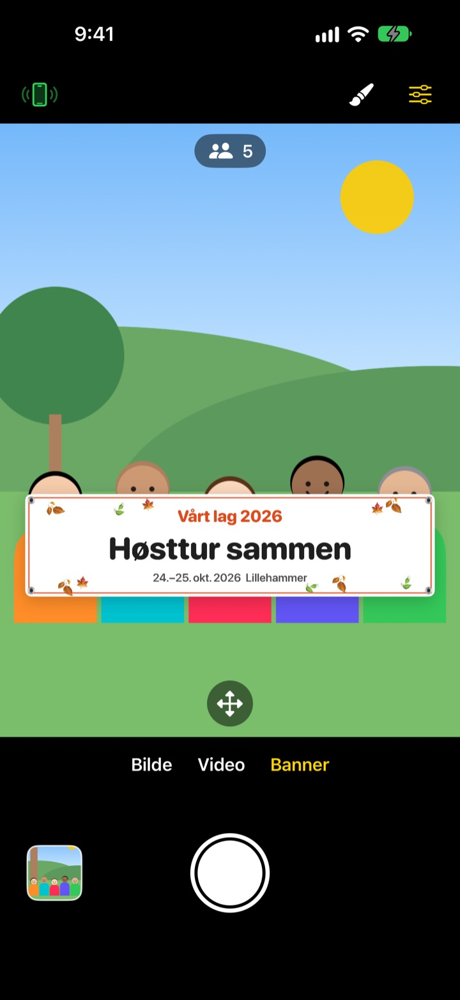
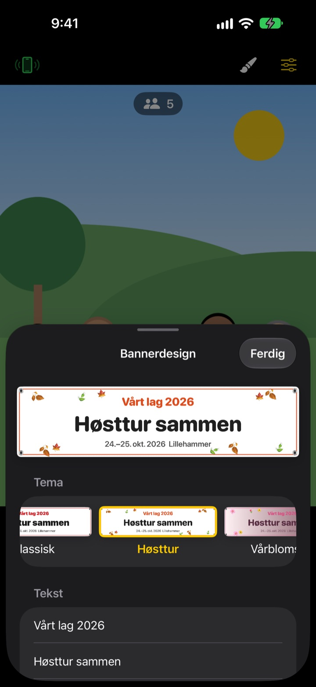

Gruppebildet med banner.
Uten å trykke et banner.
Skriv teksten, velg et tema, og banneret står rett foran gjengen. En venns iPhone blir fjernkontroll med én QR-skanning, så også den som tar bildet kommer med.
Alle funksjoner er gratis. Krever iOS 17 eller nyere.

Lag et banner
Endre teksten og trykk på et tema. Trykk på utløseren, så teller den ned fra tre, akkurat som i appen.
Bestiller du banner til ett eneste bilde?
Du bestiller det, drar det med på turen, og etterpå vet ingen hvor det skal være. Og siden ingen er igjen til å ta bildet, mangler det alltid én. ShutterLink setter banneret inn i kamerabildet og gjør en venns iPhone til fjernkontroll, så alle kommer med på bildet med banneret.
Riktig banner på ett minutt
Velg mellom 13 temaer som høsttur, vårblomster, julebord, bursdag, idrettsdag, eksamensfeiring, bryllup og bedriftsverksted, og skriv opptil tre linjer med egen tekst.
Bytt bakgrunn, skrift, pynt, farger og format, og legg til logoen din. Velg stoff, vinyl eller papir: Et stoffbanner henger, krøller seg og blafrer i vinden som et ekte.

Fjernkontroll uten installasjon
Trykk på fjernkontrollknappen øverst til venstre, så dukker det opp en QR-kode. Vennen din skanner den med Kamera-appen, og ShutterLink Remote åpnes straks som App Clip og kobler til.
I direktebildet på fjernkontrollen ser du til og med banneret, så du bare rammer inn og trykker. Hvert bilde kommer straks til iPhonen som er fjernkontroll, så en venn uten appen kan lagre og dele det på stedet.
Tre steg, så er du i gang
- 1
Sett opp iPhonen
Åpne ShutterLink og sett iPhonen på et stativ eller en hylle.
- 2
Plasser banneret
Velg Banner nederst, still inn tekst og tema med penselen, og trykk på gulvet der gjengen skal stå.
- 3
Løft hånden
Løft håndflaten eller trykk på utløseren på fjernkontrollen. Selvutløseren teller ned og tar bildet.
Laget for gruppebilder
- Håndflatebevegelse · klappeutløser
- Løft en åpen hånd mot kameraet eller klapp hardt én gang for å starte selvutløseren
- Smileutløser
- Tar bildet selv når alle smiler med åpne øyne
- Selvutløser 3 · 5 · 10 · 20 · 30 s
- En stemme teller ned, blitsen blinker i takt, og fjernkontrollen vibrerer i hånden
- Be alle se på kameraet
- Trykk, så roper kamera-iPhonen høyt så alle ser inn i linsen
- Serie på 3 · 5 bilder
- Velger det beste bildet der alle har åpne øyne. Du kan bytte til et annet i galleriet
- Antall personer · kanter · vater
- Teller personene i bildet, varsler når noen står i kanten, og viser et vater når telefonen heller
- Intervall fra 3 s til 1 min
- Fang en solnedgang eller et prosjekt underveis med faste mellomrom
- Kamerastyring
- Fokus og eksponering med et trykk, eksponeringskorrigering, blits, rutenett, zoom fra 0,5x opptil 10x avhengig av modell, front- og bakkamera, video
- Enkel modus
- Fjernkontrollen viser bare én stor utløserknapp som alle får til
- Volumknapper · Kamerakontroll
- Ta bildet rett på kamera-iPhonen, uten fjernkontroll
I bannermodus kan du ikke bruke blits, serieopptak, zoom eller frontkameraet. Selvutløser, håndflateutløser og fjernkontroll virker som vanlig.
Alle funksjoner er gratis
Gratis
- Bannermodus med 13 temaer
- Fjernkontroll uten installasjon (App Clip)
- Utløser med håndflate, klapp og smil, pluss selvutløser
- Beste bilde, persontelling og vater
- Video og intervallopptak
Gi tips (valgfritt)
- Send et lite, middels eller stort tips fra Innstillinger
- Tips låser ikke opp eller sperrer noe
Ikke et abonnement. Du betaler én gang, bare når du gir tips.
Ingen reklame og ingen konto.
Vanlige spørsmål
Hva trenger jeg?
Installer ShutterLink på iPhonen som tar bildet (iOS 17 eller nyere). På iPhonen som er fjernkontroll trenger du ikke installere noe, den trenger bare internett første gang App Clip-en åpnes. Ha Bluetooth på begge, og hold dem nær hverandre, vanligvis innen 10 m.
Jeg skanner QR-koden, men App Clip-en åpnes ikke.
Sjekk at iPhonen som er fjernkontroll, er koblet til internett. Du kan også skrive inn den firesifrede koden fra kamera-iPhonen i ShutterLink Remote og trykke på Koble til. Sjekk også at App Clips ikke er blokkert i Innstillinger › Skjermtid › Innholds- og personvernbegrensninger.
Den står fast på «Leter etter kamera …».
ShutterLink må være åpen på skjermen på kamera-iPhonen. Sjekk at Bluetooth er på i Innstillinger › Bluetooth på begge telefonene. Koden endres hver gang appen åpnes, så har du åpnet den på nytt, bruker du den nye QR-koden eller koden og trykker på Prøv igjen.
Jeg ser «Bluetooth-tillatelse avslått».
Slå på ShutterLink i Innstillinger › Personvern og sikkerhet › Bluetooth. Fjernkontrollen er en App Clip og står kanskje ikke i listen. Skann i så fall QR-koden på nytt og trykk på Tillat når du blir spurt.
Direktebildet hakker eller er uskarpt.
Direktebildet er gjort lite med vilje så det kan sendes over Bluetooth. Bilder og videoer lagres i full kvalitet fra kamera-iPhonen. Vegger, folk eller avstand kan gi hakking, men utløseren og de andre kontrollene virker fortsatt.
Hvor havner bildene mine?
I Bilder på kamera-iPhonen og i appens galleri. Fjernkontrollen får også en kopi, men lagrer den ikke selv, så lagre eller del den før du lukker fjernkontrollen. Kommer det ingenting i Bilder, gi ShutterLink tilgang i Innstillinger › Personvern og sikkerhet › Bilder.
Videoene mine har ikke lyd.
Slå på ShutterLink i Innstillinger › Personvern og sikkerhet › Mikrofon.
Kan jeg koble til flere fjernkontroller?
Ja. Flere iPhoner kan koble til samtidig med samme QR-kode eller kode, og alle utløser det samme kameraet.
Forbindelsen ryker mens jeg tar bilder.
ShutterLink holder skjermen på så lenge appen er åpen. Låser du telefonen med sideknappen eller bytter app, ryker forbindelsen, så hold appen på skjermen mens du tar bilder.
Blir bildene mine lastet opp noe sted?
Nei. De to iPhonene kobles direkte via Bluetooth, og bilder og videoer blir bare liggende på kamera-iPhonen og den tilkoblede fjernkontrollen. Det virker også på fjellet eller stranden uten dekning, og du trenger ingen konto.
Fortsatt ikke løst, eller har du funnet en feil? Skriv til leeo@kakao.com. Oppgi modell og iOS-versjon for begge iPhonene, så går det raskere å finne ut av det.